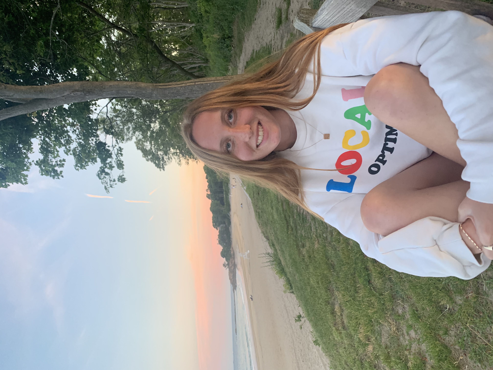
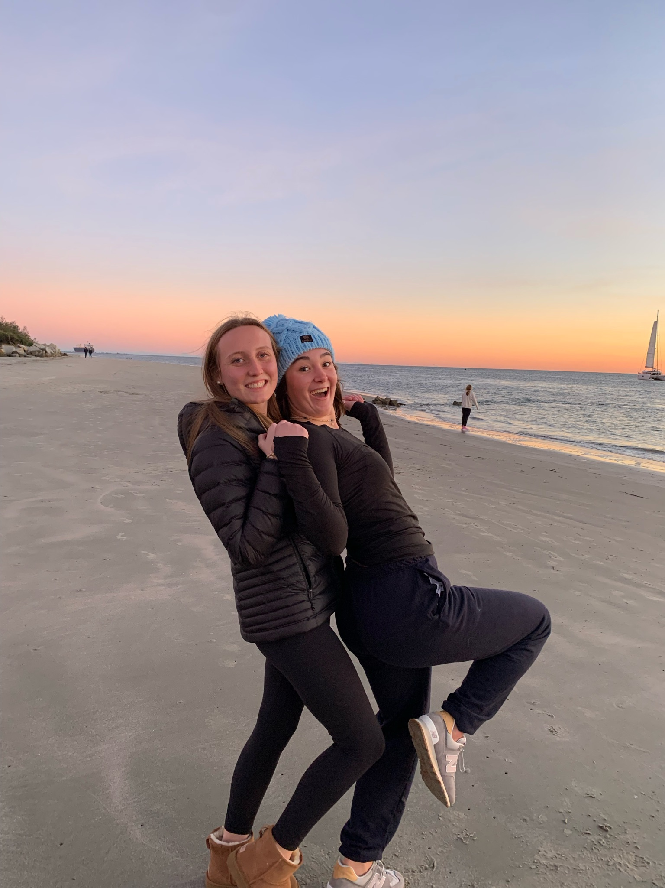
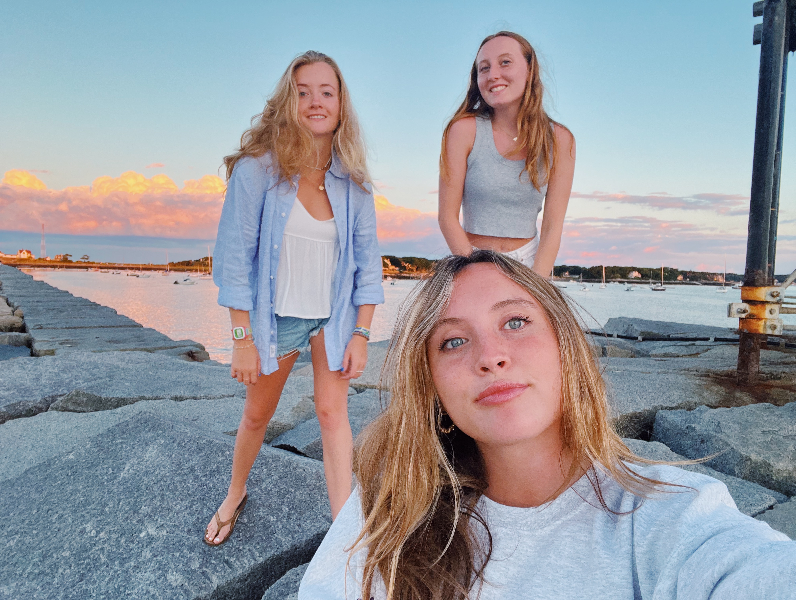

My name is Caroline Dellicker. I am a sophomore at Elon University. I am double majoring in Strategic Communications and Marketing. I live in Charleston, SC and my favorite thing to do at home is going to the beach. I also enjoying spending time with my friends, family, and my dog!
My favorite thing to do with my friends is going to the beach or near the ocean. We always have so much fun swimming or just spending time watching the sun set.
 